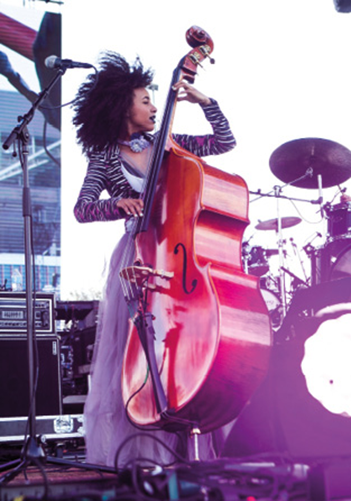
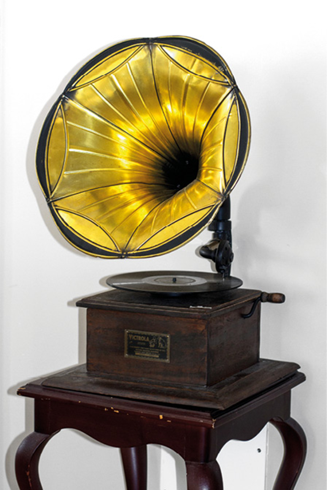
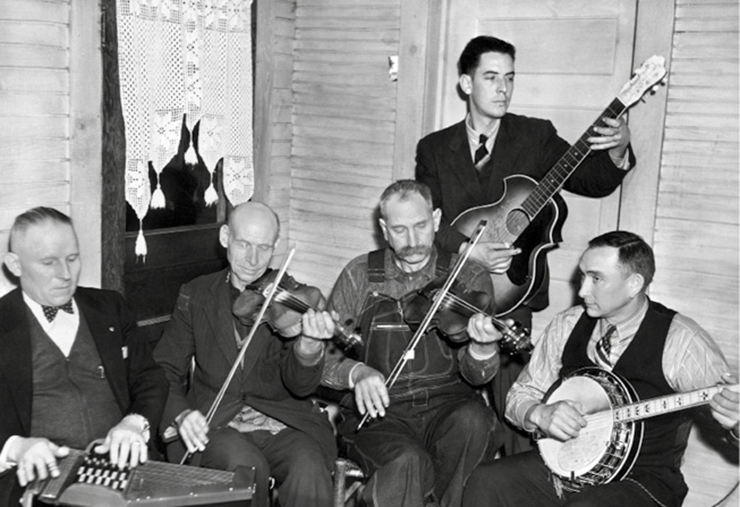
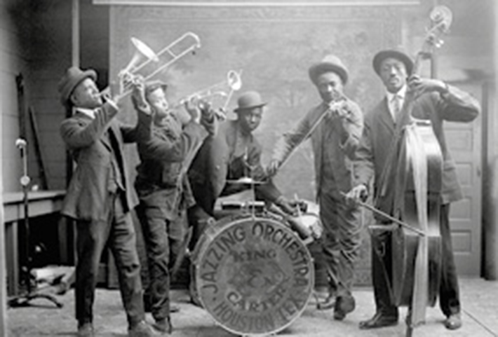
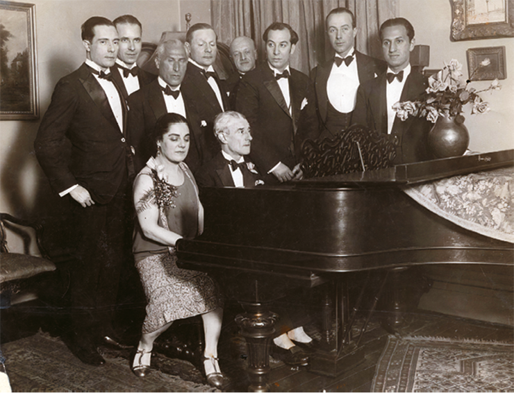
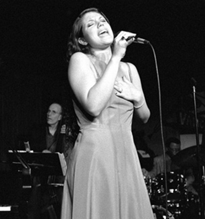
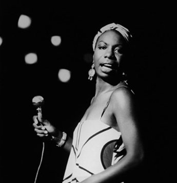
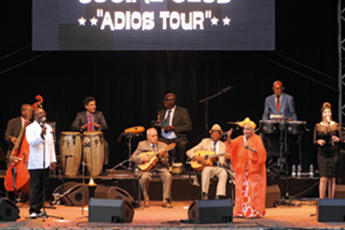
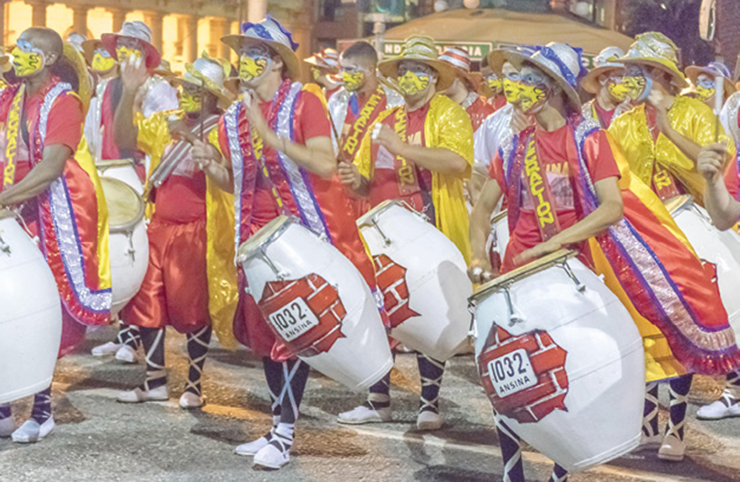
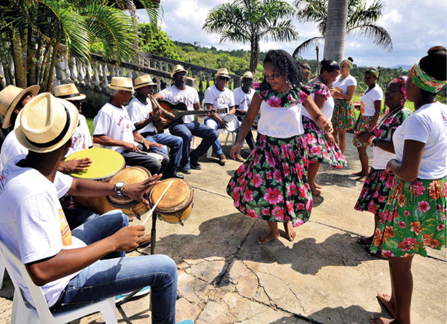

Uma revolução ocorreu na música do início do século XX, especialmente com a popularidade do rádio e com as novas tecnologias que permitiram gravar, reproduzir e distribuir música. Com isso, o público pôde ter contato com diversos estilos musicais, com ritmos e sonoridades diferentes. Alguns cantores, instrumentistas e grupos musicais ganharam destaque com a veiculação das suas produções nas rádios. Diante desse cenário, este capítulo busca examinar algumas produções musicais, especialmente das Américas, no início do século XX, e como elas se influenciaram entre si.
- Você conhece músicas populares que são características de regiões do mundo, como América Latina e do Norte? Quais diferenças você percebe entre essas produções?
- Você já ouviu falar em jazz? Quais as principais características desse ritmo musical?
- Quais artistas da música latino-americana você conhece?
Neste capítulo, serão abordadas as habilidades EM13LGG601, EM13LGG602, EM13LGG603 e EM13LGG604.
King Oliver’s creole jazz band, Louis Armstrong ao piano, com sua esposa, Lil Hardin, na outra ponta; no centro, King Oliver.
Pictorial Press Ltd/Alamy/Fotoarena
A contrabaixista e cantora de jazz Esperanza Spalding durante apresentação.
Mediapunch/Shutterstock.com
- Que semelhanças é possível notar entre as duas imagens? Explique.
- Você reconhece os instrumentos musicais presentes nas imagens? Quais são eles?
- A qual estilo musical as imagens podem estar relacionadas? Por quê?
- Em sua opinião, esse estilo musical é tocado no Brasil ou influenciou a música brasileira? Explique.
Música popular no início do século XX: muitas influências
A primeira metade do século XX foi marcada por grandes transformações sociais, culturais e também políticas por todo o mundo. Ela também foi marcada por conflitos e processos políticos que resultaram em um dos períodos mais violentos da história da humanidade, com a Primeira (1914-1918) e a Segunda (1939-1945) Guerras Mundiais. Mas também foi um período repleto de inovações tecnológicas em diversas áreas do conhecimento, ao mesmo tempo em que se deu um retorno e valorização das identidades nacionais. Assim, as manifestações populares ganharam espaço no campo artístico.
Na música, as inovações permitiram o aperfeiçoamento acústico dos instrumentos musicais e as maneiras de registrar as sonoridades, que agora podiam ser feitas com a utilização de equipamentos eletrônicos de maior precisão. Vale lembrar que, em 1877, Thomas Edison (1847-1941) já havia inventado o fonógrafo. Com esse aparelho, era possível realizar a gravação de sons, mas ainda de forma mecânica. Pouco tempo depois, em 1887, o alemão Emile Berliner (1851-1929) inventou o gramofone, o primeiro toca-discos da história.
Gramofone, inventado pelo alemão Emile Berliner.
Rita Barreto/Fotoarena
O desenvolvimento tecnológico e a música
No início do século XX, os modelos de produção industrial também foram aplicados no campo artístico, especialmente na indústria fonográfica e no cinema.
Diante desse cenário, a produção artística passou a ser entendida como um produto que também poderia ser comercializado como qualquer outro, com possibilidade de grande retorno financeiro.
Nas artes visuais, algumas obras começaram a ser produzidas em série, ou seja, deixaram de ser algo único para serem consumidas por uma grande quantidade de pessoas. Essa nova realidade sociocultural foi objeto de estudo e reflexões dos filósofos da Escola de Frankfurt, entre os quais se destacam Theodor Adorno, Max Horkheimer e Walter Benjamin.
Os filósofos da Escola de Frankfurt descrevem a indústria da cultura como um sistema integrado, que oferta às pessoas o consumo de entretenimento muitas vezes vazio, que não promove o pensamento crítico, banalizando e empobrecendo a experiência estética.
Os produtos da indústria cultural servem de veículo para a transmissão de ideologias, como o incentivo ao consumo. Diversos filmes de Hollywood, por exemplo, propagam o american way of life (estilo de vida americano), marcado pelo consumo excessivo. Com isso, a arte se transforma em mercadoria para consumo.
Adorno e Horkheimer cunharam o termo indústria cultural para denominar e avaliar o funcionamento e as consequências desse tipo de relação das pessoas com a arte.
Nesse cenário de profundas mudanças na vida das pessoas, ainda na primeira metade do século XX, os meios de comunicação passaram – e ainda passam – por intensas transformações, possibilitando a gravação, reprodução e distribuição de áudios, utilizando diferentes tecnologias. Com isso, foi possível acessar diferentes repertórios musicais de diversas regiões do mundo, multiplicando sensivelmente o acesso e a fruição artística. Observe, nas imagens a seguir, alguns desses aparelhos eletrônicos, desde os mais antigos até os digitais, utilizados na atualidade.
Os diversos tipos de aparelhos utilizados para reproduzir áudio mostram a evolução da tecnologia no decorrer nos anos.
A música popular
A partir do século XX, a música popular ganhou diversas conotações. Esse conceito abarca as manifestações musicais ligadas à cultura popular, seja ela rural, de comunidades ribeirinhas, de grupos étnicos ou característica de uma região do país. Mas o conceito também pode ser entendido como a música urbana, que se popularizou por meio da indústria do entretenimento. Cada vez mais a popularidade de uma música e o seu sucesso comercial passaram a estar intimamente ligados, de modo que, quanto maior o sucesso e o retorno financeiro, maior é o alcance de uma música.
É possível notar que, no início do século XX, nas Américas, surgiram novos estilos e formas musicais que foram divulgados mundialmente pela indústria do entretenimento que começava a aparecer, especialmente nos Estados Unidos. Entre os gêneros que se popularizaram nos Estados Unidos, nessa época, destacam-se o country (que possui diversas denominações, como folk, música apalache, western), o blues e o jazz.
Banda tradicional apalachiana, os Bog Trotters. Tinha, em seu repertório, a canção “Hop up, my ladies”, que acompanha uma dança popular, em Virgínia, nos Estados Unidos, em 1940. Os membros da banda são Doc Davis, tocando auto-harpa; Alex Dunford e Crockett Ward, nos violinos; Fields Ward, no violão; e Wade Ward, no banjo.
Granger/Shutterstock
As origens desses gêneros musicais envolvem diversas raízes. A música country, por exemplo, tem muita influência da cultura indígena norte-americana e também estrangeira, como da música dos irlandeses, escoceses e ingleses que migraram para a América do Norte. Já o jazz e o blues são frutos da cultura africana. Esses estilos estão na base de um dos gêneros musicais mais populares da segunda metade do século XX, o rock n’ roll, difundido mundialmente.
Na América Latina, as matrizes sonoras indígenas e africanas também estiveram bastante presentes na criação de novos ritmos e melodias. Destacaram-se estilos musicais e de dança como o danzón cubano, a milonga argentina, o candombe uruguaio e o samba brasileiro, entre tantos outros.
Paisagem sonora, 2015.
Disponível em: https://youtu.be/_SfwIcvDYac
Entre 1960 e 1970, Raymond Murray desenvolveu com um grupo de estudos o conceito de "paisagem sonora" (ou soundscape), em que estuda e analisa o universo (ou ambient sonoro que rodeia o ser humano, composto pelos diversos sons, de origem natural, humana, industrial ou tecnológica. Nesse vídeo, apresenta-se, de maneira clara, em animação, esse conceito que influenciou e tem influenciado músicos e pesquisadores no mundo todo.
O jazz: dos Estados Unidos para o mundo
O jazz surgiu no sul dos Estados Unidos, nos redutos de população pobre e afrodescendente da cidade de Nova Orleans, no estado da Luisiana.
No entanto, esse estilo musical está intimamente ligado à história de todo o povo americano e não apenas dos afro-americanos. Em 1929, com a quebra da Bolsa de Valores de Nova York e o período conhecido como “Depressão”, que se seguiu, existia a necessidade de se criar entretenimento doméstico aos cidadãos empobrecidos daquela época. O rádio foi um meio excelente para que isso pudesse acontecer. Assim, os ouvintes dançavam ao som das big bands, criando um clima de alívio e alegria. Com isso, o jazz deixou de estar apenas em Nova Orleans, passou a fazer parte da cultura dos Estados Unidos, de costa a costa, e rapidamente ganhou o mundo.
Naquela época, Nova Orleans era a cidade mais cosmopolita dos Estados Unidos e visitada por navios de todo o mundo. Foi fundada pelos franceses, em 1718, e governada brevemente pela Espanha. Depois, foi retomada pela França, invadida por americanos e, por fim, vendida como parte do território da Luisiana para os Estados Unidos, em 1803. Isso gerou uma mistura étnica e social muito mais intensa que em outras regiões daquele país. Antes disso, o território era habitado por indígenas, tais como os choctaw e natchez. Assim, em 1840, 40% dos habitantes de Nova Orleans eram estrangeiros. Além disso, o porto desempenhava a função de centro do mercado de escravos nos estados do Sul.
A dominância de africanos e afro-americanos em Nova Orleans era grande e aumentou após a Guerra Civil (1816-1865) e a abolição completa da escravatura. Lá se concentrava a próspera comunidade créole, formada por mestiços livres, filhos da união de colonos franceses e, principalmente, mulheres de origem negra ou indígena. Eles falavam francês, e os filhos dos mais abastados estudavam em Paris.
Com toda essa mistura acontecendo, a música era um idioma comum para o entendimento social diante de tantas diferenças. Ela estava presente nos rituais religiosos, nas residências, nas bandas que animavam as paradas de rua, nas casas de óperas, nos bailes, no porto, nos salões de beleza, nos piqueniques, enfim, fazia parte da vida das pessoas.
O que posteriormente seria chamado de jazz teve suas origens no ragtime, um estilo musical dançante feito para piano, e no blues, um estilo que se desenvolveu a partir das raízes das tradições musicais africanas e suas canções de trabalho.
O ragtime é uma música feita para piano, caracterizada pelo ritmo sincopado, ou seja, o acento é inesperadamente colocado no tempo fraco do compasso, como a segunda batida e a quarta batida em um ritmo de 4/4. Ele é considerado o equivalente norte-americano aos minuetos de Mozart, às mazurcas de Chopin ou às valsas de Brahms. Esse estilo se tornou famoso no início do século XX, com canções escritas por Scott Joplin, como “The Entertainer” e “Maple Leaf Rag”, que influenciaram muitos compositores de ragtime com seus padrões harmônicos e linhas de melodia.
Carter and King Jazzing Orchestra, em 1921, Houston, Texas.
FLHC 1C/Alamy/Fotoarena
O jazz e a improvisação
A improvisação é uma das bases do jazz. De maneira geral, os músicos utilizavam obras já conhecidas para realizar suas interpretações. A banda iniciava tocando a melodia inteira da obra, sobre uma sólida base rítmica e harmônica. Na sequência, os músicos se revezam nos solos, improvisando sobre essa base e mostrando todo seu domínio técnico e artístico. Por isso, o jazz é considerado uma arte cuja beleza vem diretamente do momento de sua criação, da performance dos músicos. Essa é a forma tradicional de tocar jazz, embora, na atualidade, outras formas também sejam utilizadas.
Ao longo do século XX, o jazz sofreu transformações, gerando novos estilos e gêneros e influenciando também as músicas de outras culturas e tradições. Isso inclui a música erudita, como foi o caso do compositor francês Maurice Ravel (1875-1937), que incorporou diversos elementos do jazz em suas composições.
Ravel ao piano, em 1928, ao lado da cantora e professora de música Éva Gauthier.
Library and Archives Canada
A improvisação musical também é uma maneira de recriar uma obra, utilizando elementos já existentes, ou de dar uma nova forma a uma composição durante a sua interpretação. Além disso, para improvisar, é necessário que o músico conheça de antemão um repertório com opções melódicas, rítmicas e harmônicas que poderão ser colocadas em prática durante sua apresentação.
Para isso, o artista se arrisca, tomando decisões no momento da apresentação, com a consciência de que alguma forma de proximidade melódica, harmônica ou de conjunto é necessária. Ou seja, o artista precisa revelar seu virtuosismo técnico ou artístico sem que se perca a unidade musical.
Alguns pesquisadores da música acreditam que, de alguma maneira, toda performance musical envolve algum grau de improvisação, visto que o músico decide, enquanto interpreta a música, cantando ou tocando, as nuances dessa ação. Isto é, durante a performance, o músico controla a força aplicada às notas musicais, a velocidade e o caráter geral que marca sua identidade musical na interpretação da obra. Dessa maneira, o artista pode criar variações e alterar o padrão rítmico ou melódico.
JAZZ. Episódio 1: Nascimento em Nova Orleans – 1890-1917. 2000. 58 min.
Produzido por Ken Burns, o documentário em doze episódios narra a história do jazz desde suas origens até 2009, enriquecido com imagens fotográficas, áudios e trechos de filmes que, por meio da edição, ilustram, de maneira extraordinária, os acontecimentos históricos e artísticos.
O primeiro episódio mostra a gênese do estilo, no final do século XIX, e sua consagração, já no início do século XX. O diferencial do trabalho documental de Ken Burns está em relacionar a música com a história do povo norte--americano, contribuindo para compreender a relação da música com a sociedade e a história.
Por dentro da arte
Para tocar jazz, alguns conceitos são utilizados pelos músicos, como:
- Standard – é uma canção de sucesso que foi incorporada ao repertório jazzístico. A interpretação de um standard pode ou não incorporar a letra da canção.
- Change – é a progressão harmônica, o encadeamento dos acordes que formam a harmonia de uma música, a qual, por sua vez, constitui o acompanhamento para a melodia. Elas são memorizadas pelos músicos de jazz e formam as bases para as improvisações.
- Solo – é considerado o grande momento do jazz, em que o artista solista faz as variações improvisadas sobre a melodia e/ou a harmonia da obra que está sendo tocada. No jazz, a valorização dos músicos está relacionada à sua habilidade para realizar solos improvisados.
- Tema – é a melodia da obra, que a torna reconhecida. Geralmente, uma banda de jazz toca o tema para apresentar a obra; seguem-se, então, os solos e uma nova apresentação do tema, como espécie de recapitulação antes do final.
Trompetista e solista Miles Davis tocando no “Festival de Jazz do Mar do Norte”, nos Países Baixos, em 1985. Ele esteve na vanguarda do jazz desde a Segunda Guerra Mundial até a década de 1990 e tinha uma liberdade incomum de articulação e altura, com capacidade de alta complexidade técnica com seu trompete.
Peter Buitelaar (CC BY 2.0)/Wikimedia Commons
Mulheres e o jazz
Quando o jazz surgiu, no início do século XX, os músicos afro-americanos frequentemente enfrentavam o problema do racismo, que, na sociedade da época, era ainda mais escancarado do que nos dias de hoje. E as mulheres que buscavam se firmar no gênero, além do racismo, precisavam vencer também o sexismo.
Entretanto, mesmo com todo o preconceito e as dificuldades impostas a elas, essas mulheres ocuparam a linha de frente do jazz, desempenhando diversas atividades, como cantar, tocar diferentes instrumentos musicais e também compor.
Foram muitas as mulheres que brilharam e fizeram o jazz se destacar mundialmente, como Blanche Calloway (1902-1978), Nina Simone (1933-2003), Sarah Vaughan (1924-1990), Ella Fitzgerald (1917-1996), Billie Holiday, (1915-1959), entre tantas outras. Além de artistas, muitas delas também foram ativistas dos direitos civis.
Jane Monheit cantando no Village Vanguard em Manhattan, Nova York.
Hiroyuki Ito/Getty Images
Nina Simone, em 1964. É considerada um dos grandes nomes do jazz, além de ter sido ativista dos direitos civis.
Getty Images
A mulher na luta pelos direitos dos negros e a música como expressão dos direitos civis
Nina Simone, nome artístico de Eunice Kathleen Waymon, ficou conhecida não só por sua voz ímpar, como também por seu papel e influência na luta contra o racismo e a desigualdade social, tornando-se símbolo de resistência para as novas gerações.
De origem humilde e com talento reconhecido desde criança, foi uma das primeiras artistas negras a entrar na renomada Escola de Música, Dança e Dramaturgia Juilliard, em Nova York; apesar dessa conquista, sofreu muito preconceito em sua vida artística. Além de pianista e cantora, ela compôs muitas canções que se tornaram sucesso à época, entre elas a música “Mississipi Goddman” (1964), que foi composta como forma de protesto após um atentado racista que acabou por assassinar quatro crianças negras em uma igreja no Alabama, em 1963. A canção, que fala sobre injustiças sofridas por negros, tornou-se hino do movimento negro estadunidense. Ela também compôs uma canção em homenagem ao líder Martin Luther King, assassinado em 1968, e emocionou a todos ao cantar no enterro dele. Foi assim que ela e suas composições tornaram-se símbolo de expressão dos direitos civis e da luta do movimento negro. Por conta de sua postura política e ativista, ela acabou sofrendo negligência de casas de músicas, gravadores e parte do público; por isso, em 1970, ela mudou de país e deixou os palcos, retornando somente anos depois.
A sociedade norte-americana ficou marcada pela postura dessa mulher que escolheu lutar pelos direitos civis e igualdade social, transformando sua arte e tornando-se inspiração para muitos jovens pela continuidade desse movimento mesmo após sua morte, em 2003.
Ao longo da história, pudemos ver que as pessoas negras estão sujeitas a mais episódios de violência física e psicológica, à falta de oportunidade profissional e desigualdade salarial, a dificuldades de acesso à cultura, à educação e à saúde, entre tantas outras necessidades e direitos que todo cidadão tem garantido por lei. Se colocarmos uma lupa ainda maior nesse problema e forcarmos na parcela da população correspondente às mulheres negras, a disparidade fica ainda maior.
What Happened, Miss Simone?
Direção: Liz Garbus, 2015.
Classificação indicativa: 12 anos.
O documentário apresenta a história da cantora Nina Simone e sua relação com a música clássica, o jazz e blues. A obra acompanha também a luta de Simone pelos direitos civis, participando ativamente em palanques e na criação de canções que falam da beleza e da importância de seu povo.
Cartaz do movimento que luta contra o racismo, a violência e a desigualdade social.
Eugenio Marongiu/Shutterstock.com
Em meados de 2020, no final do mês de maio, George Floyd, um cidadão norte-americano, residente de Mineápolis, foi sufocado até a morte por um policial branco enquanto sussurrava a frase “não consigo respirar” e implorava para continuar vivo. Grande parte da sociedade civil se organizou em protestos pelas ruas por diversas cidades ao redor do mundo e virtualmente na luta contra o racismo e em defesa dos direitos humanos.

Multidão protestando nas ruas de Nova York, em junho de 2020, contra a morte de George Floyd.
CHOONGKY/Shutterstock.com
Movimentos sociais e culturais são de extrema importância nesse percurso, na tentativa de “acordar” as pessoas para a importância, relevância e legitimidade de uma cultura que, muitas vezes, nasce em ambientes periféricos, por vezes mal vistos por muitos, mas que são de um refinamento ímpar.
Tendências como o blues e o jazz são somente dois exemplos da arte produzida por pessoas que estiveram e ainda estão à margem da sociedade, mas que não deve nada para à cultura europeia ou americana, por exemplo. Nina Simone, Ella Fitzgerald, Miles Davis, Billie Holiday, Elza Soares são alguns nomes ligados à música que têm reconhecimento internacional, aclamados por críticos de arte e pelo público e que possuem lugar especial dentro da história da cultura e da luta pela igualdade racial.

Capa do disco Getz/Gilberto, ganhador do Grammy de melhor disco do ano, em 1965.
Reprodução
O jazz e a música brasileira
A música popular brasileira, conhecida como MPB, é considerada por músicos e críticos da área um produto de grande qualidade e diversidade harmônica, tornando-se fonte de inspiração para vários músicos, entre eles os de jazz, em diversas partes do mundo.
Muitos artistas do jazz, como Stan Getz (1927-1991), Paul Desmond (1924-1977), Dizzy Gillespie (1917-1933) e Miles Davis (1926-1991), já interpretaram e gravaram canções brasileiras. O álbum Getz/Gilberto foi lançado em 1964, numa parceria entre o saxofonista Stan Getz e o violinista João Gilberto, com participação especial de Tom Jobim (1927-1994) no piano e Astrud Gilberto nos vocais de algumas faixas. Nessa época, a bossa nova estava em declínio no Brasil, mas começava a ser apreciada no exterior, especialmente no universo jazzístico.
João Gilberto, Tom Jobim, Vinicius de Moraes e outros cantores e compositores da zona sul da cidade do Rio de Janeiro estão ligados ao desenvolvimento da bossa nova, gênero musical surgido no Brasil no fim da década de 1950, derivado do samba e com influência do jazz. A bossa nova tornou-se um dos movimentos mais influentes da história da música popular brasileira.
Esse álbum foi muito vendido no mundo todo e popularizou a música brasileira em outros países, destacando composições que ficaram conhecidas mundialmente, como “Garota de Ipanema”, de Tom Jobim e Vinicius de Moraes (1913-1980). O balanço sambístico da bossa nova, o minimalismo de Tom Jobim e João Gilberto, a voz contida de Astrud Gilberto e os improvisos jazzísticos de Getz garantiram ao álbum o Grammy de melhor disco do ano, em 1965. O Grammy é uma cerimônia de premiação da Academia Nacional de Artes e Ciências de Gravação, dos Estados Unidos; é considerado um dos maiores prêmios mundiais de música e escolhe seus vencedores anualmente, em reconhecimento à excelência do trabalho e conquista na arte musical.
Muitos outros músicos do jazz norte-americano continuaram se aproximando da música brasileira, como Stacey Kent, que gravou, entre outras canções, uma versão em francês da música “Águas de março”, de Tom Jobim; e as cantoras Esperanza Spalding e Jane Monheit, que até se dedicaram ao aprendizado de língua portuguesa, para poder cantar com maior fluência.

Cantor Milton Nascimento e a cantora e baixista Esperanza Spalding juntos durante a apresentação do show no Rock in Rio 2011, na cidade do Rio de Janeiro.
A.Paes/Shutterstock
América Latina e sua música popular
No início do século XX, a música latino-americana se tornou conhecida em diversas regiões do mundo.
Os estilos musicais criados no final do século XIX e início do século XX misturavam elementos das culturas indígena e africana com outros da música ocidental. Nesse contexto, conforme mencionado anteriormente, surgiram estilos como o danzón cubano, a milonga argentina, o candombe uruguaio e o samba brasileiro. Esses ritmos, além de estilos musicais, também eram acompanhados de dança, geralmente destacando a sensualidade e a proximidade entre os casais.
O danzón causou polêmica quando começou a ser tocado e dançado nos clubes cubanos, no início do século XX. Isso porque seu ritmo era lento e os casais dançavam com os corpos bem próximos, remexendo os quadris. Apesar do escândalo social, o ritmo era contagiante, e os clubes que tocavam esse estilo ficaram famosos e viviam lotados de pessoas de diferentes etnias.
Na década de 1940, um dos mais famosos clubes cubanos foi o Buena Vista Social Club. Nele tocavam músicos como Manuel “Puntillita” Licea (1921-2000), Ibrahim Ferrer (1927-2005), Pío Leyva (1917-2006), Anga Díaz (1961-2006), Omara Portuondo e Compay Segundo (1907-2003).
Em 1999, as apresentações que aconteciam no Buena Vista Social Club inspiraram o músico cubano Juan de Marcos González e o guitarrista americano Ry Cooder, que propuseram a gravação de um álbum com os músicos tradicionais que ali tocavam, além de um documentário e turnês musicais. O álbum levou o nome do clube e se tornou um grande sucesso internacional.
A milonga é um estilo de música e dança característico da Argentina, do Uruguai e também do estado do Rio Grande do Sul, no Brasil. Ela é dançada em pares e geralmente acompanhada por violão, flauta e violino. Originalmente, a milonga era um poema cantado, no qual a letra era mais importante que a música. Com o passar do tempo, o ritmo ficou mais acelerado, e a música se sobrepôs à letra. Na dança milonga, os movimentos foram influenciados pelos passos da mazurca, da valsa e de danças de origem africana. O famoso tango argentino surgiu da milonga.
Integrantes do grupo cubano Buena Vista Social Club se apresentando em Hamburgo, Alemanha.
JazzArchivHamburg/Getty Images
Um dos mais conhecidos compositores de milonga é Héctor Roberto Chavero (1908-1992), conhecido como Atahualpa Yupanqui, em homenagem às suas origens. Ao lado de Mercedes Sosa (1935-2009), ele é considerado um dos grandes músicos da Argentina e da América Latina.
O candombe é um ritmo musical típico do Uruguai, que deriva da sonoridade criada entre os africanos escravizados. Durante o século XVIII, era permitido que os escravizados se encontrassem, aos domingos, para realizar seus rituais religiosos, próximos à muralha de Montevidéu. Para convocar uns aos outros, eles usavam o som de tambores, que ecoava pelas ruas da cidade. Com o tempo, os diferentes toques foram se fundindo e surgiu o candombe, ritmo em que são usados três tipos de tambores: piano, que é maior e mais grave; chico, que é menor e mais agudo; e repique, que é médio em tamanho e timbre e também responsável pelo improviso das batidas.
Desfile de candombe uruguaio.
Zoonar/Daniel Ferreira-Leites Ciccarino/Alamy/Fotoarena
Além dos tambores característicos da cultura africana, a música latino-americana também é marcada por instrumentos como o agogô, a cuíca, o caxixi, o berimbau, entre outros.
O samba é um ritmo musical e de dança de origem africana e considerado uma das principais manifestações populares brasileiras. Atualmente, existem diversos tipos de samba no Brasil, como o samba de roda, samba-canção, samba de breque, samba-enredo etc.
O samba surgiu como uma obra coletiva de um grupo composto por velhos foliões de origem baiana que moravam nos subúrbios cariocas e por gente que integrava a baixa classe média do Rio de Janeiro (antigos trabalhadores da zona portuári. Inicialmente se estabeleceu nos morros e na Praça Onze, onde se reuniam as pessoas de menor poder aquisitivo durante o Carnaval. Quando rompeu as barreiras das comunidades dos morros cariocas, marcadas em grande parte pela imigração em massa de ex-escravizados, abandonados à própria sorte, acabou por se transformar em símbolo nacional, tanto para os brasileiros quanto para o público internacional.
Apresentação do grupo Samba de Roda Filhos da Terra.
Sergio Pedreira/Pulsar Imagens
Mãos à obra
Crie um programa de rádio sobre um dos estilos musicais do início do século XX aqui estudados, como o jazz norte-americano, o danzón cubano, a milonga argentina, o candombe uruguaio ou o samba brasileiro. Reúna-se em grupo com os colegas e pesquisem, em conjunto, composições e artistas do estilo escolhido, destacando os compositores, intérpretes, a história das músicas e dos músicos envolvidos em um grupo, banda ou festival. Separem também alguns trechos de composições ou interpretações dos artistas que serão apresentados.
Todos os participantes do grupo devem trabalhar para a elaboração do programa de rádio, contribuindo de diferentes formas: na elaboração do roteiro do programa, na realização de entrevistas com músicos locais ou na pesquisa de trechos de entrevistas que já foram feitas por outras pessoas. Outras funções podem ser a escolha do repertório, música de fundo para a apresentação, criação de vinhetas, edição e montagem da sequência da apresentação e das músicas etc.
Se possível, utilizem espaços da escola, como o laboratório de informática para a gravação e reprodução do áudio do programa para o restante da turma.
Por fim, apresentem seu programa para a turma e, depois, mediados pelo professor, realizem uma roda de conversa sobre o processo de pesquisa, criação e apresentação do programa de rádio.
Música à nossa volta
- Além das manifestações da música popular brasileira estudadas neste capítulo, quais outras você conhece que se destacaram no século XX? Comente sobre elas.
- Você já observou alguma apresentação de jazz na região onde vive? Onde e em que situação ela aconteceu?
- Como as pessoas da cidade (ou da comunidad em que você vive se relacionam com a música popular de origem africana? Esse tipo de música faz parte de alguma comemoração ou evento da cultura regional?
- Você saberia explicar as influências do jazz na música popular brasileira e da música brasileira no jazz?
1
UEM-PAS 2020 Sobre a música e suas mudanças por meio da evolução tecnológica, assinale o que for correto.
- 01. A “música experimental” é um gênero musical criado em 1963 pelo músico americano Frank Zappa, quando fez uma apresentação na TV usando uma bicicleta como instrumento.
- 02. Muito utilizados pela indústria musical, os discos de vinil contêm marcas em sua superfície, as quais registram o som das vozes dos cantores e dos diversos instrumentos.
- 04. O conceito de “paisagem sonora” criado por Raymond Murray Shaffer ampliou os conceitos sobre os sons musicais, influenciando diversos compositores a utilizar a sonoridade de automóveis, de fábricas e de outros elementos urbanos em suas composições.
- 08. A invenção de aparelhos como o gramofone e o fonógrafo foi responsável pela propagação da música, pois, até aproximadamente a metade do século XIX, só se ouvia música em apresentações ao vivo.
- 16. Uma das tecnologias que popularizou o acesso à música foi o rádio. No Brasil, em 1900, o Padre Roberto Landell de Moura foi o primeiro a transmitir a voz humana por ondas eletromagnéticas.
- Soma:
2
Assinale verdadeiro (V) ou falso (F) nas sentenças a seguir:
- ( ) O danzón é um tipo de música e dança cubana que causou escândalo na época em que foi criado: seu ritmo lento aproximava os casais, que dançavam remexendo os quadris.
- ( ) A milonga é um estilo de música e dança que surgiu como poema cantado, típico da Argentina, do Uruguai e também do Estado do Rio Grande do Sul, no Brasil.
- ( ) A milonga é um ritmo de origem norte-americana caracterizado pelo uso de instrumentos de percussão. Ela sofreu influências da mazurca, da valsa e do tango argentino.
- ( ) O tango é um ritmo musical e de dança derivado da milonga. Mercedes Sosa e Atahualpa Yupanqui são considerados grandes representantes desse estilo musical.
3
O candombe é um ritmo musical característico do Uruguai, que deriva da escravidão africana presente no país na segunda metade do século XVIII. O candombe utiliza três tipos de tambores: piano (maior e mais grav, chico (menor e mais agudo) e repique (médio em tamanho e timbre, responsável pelo improviso). Além dos tambores, a música latino-americana também é marcada por outros instrumentos de origem africana, como:
- Viola, violino e tambor.
- Agogô, cuíca e caxixi.
- Cavaquinho, viola e tambor.
- Berimbau, violão e pandeiro.
4
Movimento musical que se originou no Rio de Janeiro na década de 1950, a bossa nova possui características bastantes, peculiares e marcou profundamente a história e a cultura brasileiras. A respeito desse tema, assinale o que for correto.
- 01. Tom Jobim, Roberto Menescal, Vinicius de Moraes e João Gilberto figuram entre os principais representantes da bossa nova.
- 02. A bossa nova sofreu a influência de vários outros ritmos, como o samba, o jazz, o blues, o choro e a moda de viola.
- 04. Garota de Ipanema, composta por Chico Buarque e Tom Jobim, foi gravada por Frank Sinatra e tornou-se uma das canções mais conhecidas da bossa nova.
- 08. A bossa nova ganhou repercussão internacional, especialmente após o show no Carnegie Hall (Nova York), do qual participaram Tom Jobim, João Gilberto, Carlos Lyra, entre outros.
- 16. O surgimento da bossa nova coincidiu com o período em que Juscelino Kubitschek estava na presidência da República.
- Soma:
1
Enem Torna-se claro que quem descobriu a África no Brasil, muito antes dos europeus, foram os próprios africanos trazidos como escravos. E esta descoberta não se restringia apenas ao reino linguístico, estendia-se também a outras áreas culturais, inclusive à da religião. Há razões para pensar que os africanos, quando misturados e transportados ao Brasil, não demoraram em perceber a existência entre si de elos culturais mais profundos.
SLENES, R. Malungu, ngoma vem! África coberta e descoberta do Brasil. Revista USP, n. 12, dez./jan./fev. 1191-92 (Adapt.).
Com base no texto, ao favorecer o contato de indivíduos de diferentes partes da África, a experiência da escravidão no Brasil tornou possível a
- formação de uma identidade cultural afro-brasileira.
- superação de aspectos culturais africanos por antigas tradições europeias.
- reprodução de conflitos entre grupos étnicos africanos.
- manutenção das características culturais específicas de cada etnia.
- resistência à incorporação de elementos culturais indígenas.
2
UEPG-PR Sobre os conceitos de indústria cultural e cultura de massa, assinale o que for correto.
- 01. Surgiram a partir da abordagem da chamada Escola de Frankfurt sobre a relação entre cultura e ideologia.
- 02. O desenvolvimento dos meios de comunicação de massa e o modelo industrial/comercial aplicado aos bens culturais forjaram a indústria cultural.
- 04. A cultura de massa é o principal produto da indústria cultural, tornando secundárias as noções de cultura erudita e popular.
- 08. O caráter homogêneo da cultura de massa representa a inexistência das classes sociais diante da indústria cultural.
- Soma:
3
UEM-PR Sobre o estilo musical jazz é correto afirmar:
- 01. Uma das principais características do jazz é o uso da improvisação. Esta, por sua vez, é baseada em um tema musical, geralmente apresentado ao início da performance.
- 02. A partir de 1920, o jazz passa a ser conhecido em todo o mundo. Porém, no Brasil, foi somente nos últimos dez anos que ele passou a influenciar a produção musical de compositores brasileiros, entre os quais podemos destacar Hermeto Pascoal.
- 04. O desenvolvimento dos intérpretes vocais no jazz, na sua origem, teve influência das práticas musicais desenvolvidas nos cultos protestantes.
- 08. O jazz influenciou a produção musical, mesmo de compositores da chamada música erudita, a exemplo do compositor Maurice Ravel, que incorporou elementos jazzísticos em algumas de suas obras.
- 16. O jazz surge ainda no século XIX, na Inglaterra, sob a influência da música europeia ocidental, e chega aos Estados Unidos na década de 1920, por meio dos colonizadores europeus que se refugiaram nesse país durante a Segunda Guerra Mundial.
- Soma:
Superação
Enem A recuperação da herança cultural africana deve levar em conta o que é próprio do processo cultural: seu movimento, pluralidade e complexidade. Não se trata, portanto, do resgate ingênuo do passado nem do seu cultivo nostálgico, mas de procurar perceber o próprio rosto cultural brasileiro. O que se quer é captar seu movimento para melhor compreendê-lo historicamente.
MINAS GERAIS: Cadernos do Arquivo 1: Escravidão em Minas Gerais. Belo Horizonte: Arquivo Público Mineiro, 1988.
Com base no texto, a análise de manifestações culturais de origem africana, como a capoeira ou o candomblé, deve considerar que elas
- permanecem como reprodução dos valores e costumes africanos.
- perderam a relação com o seu passado histórico.
- derivam da interação entre valores africanos e a experiência histórica brasileira.
- contribuem para o distanciamento cultural entre negros e brancos no Brasil atual.
- demonstram a maior complexidade cultural dos africanos em relação aos europeus.